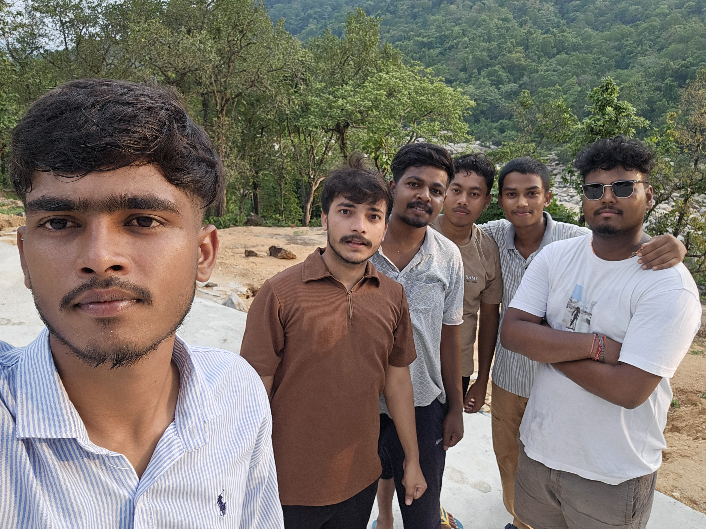

I am a hardworking individual with no prior experience in the field of Tech.
I have recently started
learning web development and am excited to build my skills in creating websites
and web applications. Currently, I am exploring the fundamentals of HTML, CSS,
and JavaScript while gaining an understanding of how modern web technologies
work together. As a beginner, I am eager to learn, practice, and grow my
knowledge through hands-on projects and continuous learning. My goal is to
become a skilled web developer and contribute to innovative digital solutions
in the future.
Bachelors of Technology, Information Technology - BIT Sindri,Dhanbad,Jharkhand